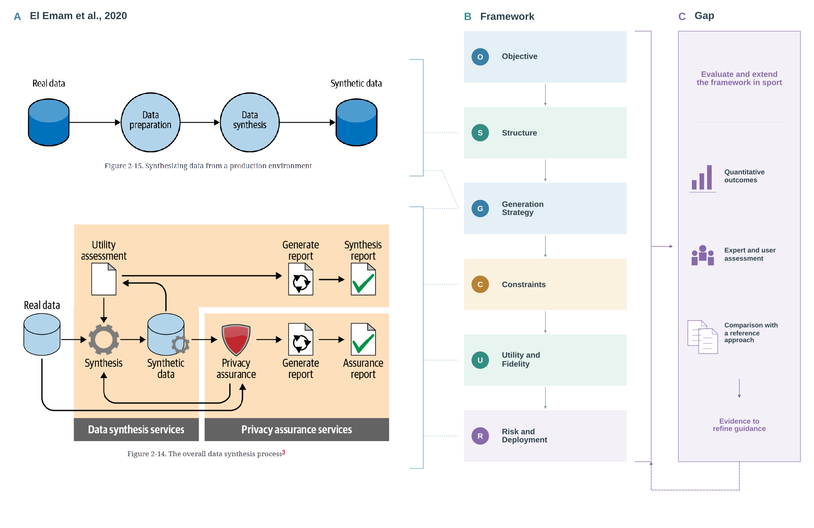

Purpose
Synthetic data generation involves decisions about intended use, the information available, acceptable assumptions and the evidence needed to judge the result. This document compares the practical approach in Practical Synthetic Data Generation with the six dimensions of the synthetic data framework for sport. It maps the shared concepts, explains how the framework organises them through an operational perspective, and identifies a shared research gap concerning its evaluation (El Emam et al. 2020; Ruiz Pinto et al. 2026).
The comparison draws on the book figures and chapter overviews, together with the framework’s published dimensions and guiding questions. It provides a conceptual mapping and a direction for empirical development. Journal studies support the distinction between evaluating synthetic outputs and examining the contribution of the framework itself.
Book approach
The book connects the decision to use synthesis with organisational needs and the practical process of preparing, generating, assessing and reporting synthetic data. In its production example, preparation links real data to synthesis. The overall process then connects the generated data to utility assessment and privacy assurance, with feedback that can lead to changes in synthesis (El Emam et al. 2020, chap. 2, Figures 2-14 and 2-15).
These assessments have different roles. Utility assessment examines whether the data preserve useful information, while privacy assurance examines disclosure concerns. The process produces a synthesis report and a separate assurance report. Keeping these outputs distinct makes the evidence behind each assessment visible.
The real-data workflow is one route described in the book. Its source-type table also includes generation informed by an existing process model or analyst knowledge. The usefulness of those records depends on the adequacy of the model and knowledge for the phenomenon represented (El Emam et al. 2020, Table 1-1).
Within utility assessment, the book considers individual distributions, relationships between variables, multivariate analyses and distinguishability. It also distinguishes assessment for a specified analysis from broader assessment when future analyses are not fully known. Consequently, the comparison must preserve both statistical resemblance and usefulness for an intended task (El Emam et al. 2020, chap. 4, Figure 4-22).
Sport framework
The sport framework combines practices identified across twelve sport studies with a Concept of Operations (CONOPS) perspective. This perspective connects the intended user, the system’s purpose and its operating conditions to the choices made during synthetic data development (Ruiz Pinto et al. 2026).
Its contribution can be described as supporting quality through design. The guiding questions make the required decisions explicit before their consequences are assessed. They provide qualitative guidance while also identifying where quantitative evidence is needed, particularly when judging statistical correspondence and analytical usefulness.
The dimensions follow an ordered decision pathway: Objective, Structure, Generation Strategy, Constraints, Utility and Fidelity, and Risk and Deployment. Findings can lead to earlier decisions being reconsidered, so their order also supports iteration. Risk and Deployment forms one dimension (Ruiz Pinto et al. 2026, Table 3 and Figure 1).
Comparison
The table maps book concepts to the dimensions that address related decisions. These correspondences are an interpretation of the two sources. A concept can span several dimensions because preparing data, controlling valid combinations and assessing the result are connected activities.
| Book concept | Framework coverage | Connection |
|---|---|---|
| Reasons for synthesis and intended uses | Objective | Define the problem and the use the synthetic data should support. |
| Source data, preparation and field types | Structure; Constraints | Specify the represented information, its organisation and the rules applied during preparation. |
| Synthesis methods, information sources and assumptions | Generation Strategy | Select how to generate records from the available evidence and assumptions. |
| Rules governing valid combinations and privacy controls | Constraints | State what variation is acceptable and what must be controlled. |
| Utility assessment | Utility and Fidelity; Objective | Connect statistical resemblance and analytical usefulness to the intended task. |
| Privacy assurance | Constraints; Risk and Deployment | Connect disclosure concerns and controls to assessment and conditions of use. |
| Synthesis and assurance reports | Risk and Deployment | Communicate the process, assessment evidence, assumptions and limitations. |
The book concepts are documented in Chapters 1, 2, 4 and 7, including the source types, synthesis process, utility dashboard and practical handling of fields and rules (El Emam et al. 2020). The framework’s coverage follows its published guiding questions (Ruiz Pinto et al. 2026, Table 3).
The mapping shows shared concerns with different organisation. The book provides practical guidance for carrying out synthesis, including its organisational purpose. The framework assembles related decisions around the operating conditions of sport and makes the relationships between purpose, data, constraints and use explicit. For example, the book’s utility assessments connect to both the intended use and the evaluation dimension, while privacy assurance connects to controls as well as reporting and deployment.
The diagram brings these relationships together. Its third column contains one research gap shared by the framework as a whole. The proposed evaluation feeds back into refinement of its guidance.

Research gap
The shared research gap is to establish how the framework’s design guidance contributes to synthetic data that are fit for their intended use in sport. Addressing it requires an evaluation approach that connects documented decisions to measurable outcomes within defined sport contexts, together with evidence about the relevance and clarity of the guidance. This direction follows the framework paper’s call for empirical validation and shared evaluation standards (Ruiz Pinto et al. 2026).
Sport-specific evaluation requires a defined task, population, data structure and operating context. Established measures can then be selected according to the properties that matter in that setting. A measure of overall resemblance and a measure of performance on a particular analysis answer different questions. For example, El Emam et al. (2022) examined utility metrics against a specified prediction workload, while El Emam et al. (2024) evaluated the replicability of analyses using synthetic health data. These studies support linking quantitative evidence to the analytical purpose.
Evaluating the framework also requires examining how its guidance influences decisions. Synthetic-data quality measures describe the outputs of a particular development process; interpreting the framework’s contribution requires information about the decisions made and a defined comparison. Expert and user assessment can identify unclear questions, missing guidance and assumptions that need stronger justification. The refinement of another established framework through literature and user feedback provides a methodological precedent for that part of the evaluation (Damschroder et al. 2022).
Evaluation basis
The proposed extension combines three complementary sources of evidence. Each contributes to the same shared research question.
| Evidence | Assessment focus | Contribution to framework development |
|---|---|---|
| Quantitative outcomes | Measure task-relevant statistical correspondence, analytical usefulness and compliance with domain rules; assess disclosure risk where relevant to the intended use. | Establish how well generated outputs meet predefined requirements, with their uncertainty and operating conditions stated. |
| Expert and user assessment | Review the relevance, clarity and completeness of decisions and their supporting assumptions against explicit criteria. | Identify where questions or guidance need clarification, extension or stronger evidence. |
| Comparison with a reference approach | Compare framework-guided development with a specified reference approach using equivalent tasks, source evidence and resources, and common assessment criteria. | Examine whether the framework contributes to better decisions or outcomes and identify the conditions under which that contribution occurs. |
The quantitative component will begin with established measures matched to the intended task. Each measure needs a defined quantity, a reference for comparison and an interpretation within the sport context. Developing a combined score would additionally require justification of its components, weighting and interpretation, followed by empirical validation. The initial evaluation will retain the individual results so their meaning and trade-offs remain visible.
Qualitative findings will explain the decisions behind those results and identify how the guidance should change. Together, the evidence will support refinement of the framework while preserving the connection between intended use, design choices and observed outcomes. The reusable outputs of this comparison are the source mapping and the schematic defining that shared development direction.